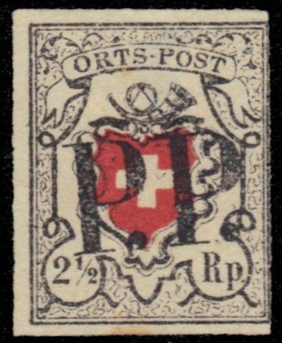
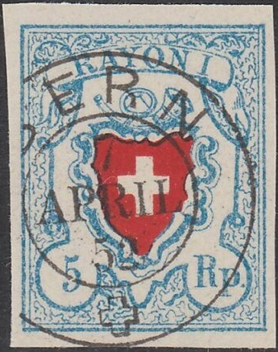
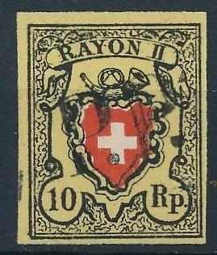
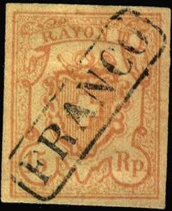
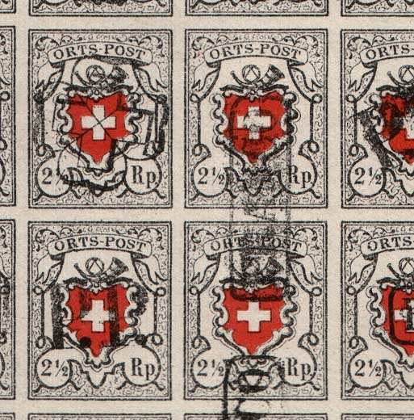
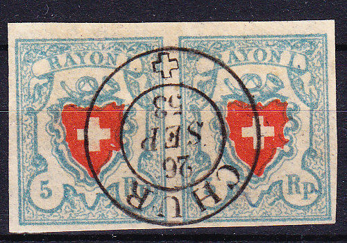

{kind=link}



Return To Catalogue - Switzerland overview - Switzerland issues from 1850-1853 - Forgeries of the 1850 issue, part 2 - Forgeries of the 1850 issue, part 3 (Sperati) - Forgeries of the 1850 issue, part 5 (Fournier) - Cancels on first federal issues - Types of the 1850 issue, part 1 - Types of the 1850 issue, part 2 - Issues form 1854-1881
Note: on my website many of the
pictures can not be seen! They are of course present in the
catalogue;
contact me if you want to purchase the catalogue.
Switzerland forgeries of the 1850
issue, part 5 (more Fournier forgeries)
Switzerland forgeries of the 1850 issue,
part 1, Forgeries of the 1850 issue,
part 2, Forgeries of the 1850 issue,
part 3 (Sperati)
I will describe some Fournier (a famous forger) forgeries here. Even though I have been told that these are Fournier forgeries, none of these stamps, nor the cancels can be found in 'The Fournier Album of Philatelic Forgeries'! He distinguishes between first and second class forgeries in his pricelist. I will first show his 'simple' second class forgeries and then continue with Fournier forgeries that can be found in this album (presumably first class forgeries).



In my view, the "O" of "RAYON" is too big and
too round in this forgery. Note the "ZUG 14 JUN 52"
forged cancel.
 


Note the "ZUG 14 JUN 52" forged cancel, which also
appeared in one of the above forgeries.

Part of a sheet with the above forgeries.
A different type 10 Rp forgery, with "FRANCO" cancel.

Different values, but same background types!
Note that the circular cancel on the 5 rp 'stops' at the left edge of the stamp. Note that the background line fragments are the same for all the 2 1/2 rp stamps (remember that there are many different types in the genuine stamps and that the background lines change for every type, two joining stamps can never be of the same type). Also note that these lines are the same for both the 5 rp, 10 rp and 15 rp stamps!

Other Fournier forgeries:
(A whole sheet of forgeries, Fournier? Note the many different
cancels and that the cancels sometimes stop at the edges of the
stamp, the cancels are also too 'perfect')

(2 stamps of this forged sheet)



Two forgeries made by the same forger. The cancels "CHUR 26
SEP 53", "P.P." and "ST.G." can be found
on the above forgery sheet.

(A vertical strip of 4 forgeries)


I've been told that these are also Fournier forgeries; I can't
find the "GENEVE 8 JUIN 53 ?" and "BERN 6 JUIL
52" cancels in the Fournier Album though.
{kind=link}
{kind=link}
{kind=link}
{kind=link}